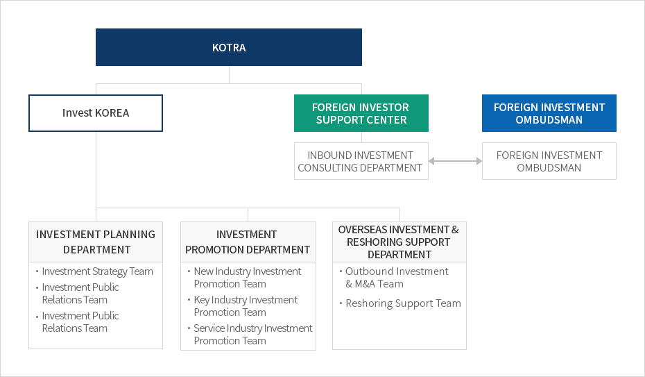

Headquarters and Global Network
- Home
- IK Services
- Introduction of IK
- Headquarters and Global Network


KOTRA
- Invest KOREA
- INVESTMENT PLANNING DEPARTMENT
- Investment Strategy Team
- Investment Public Relations Team
- Investment Public Relations Team
- INVESTMENT PROMOTION DEPARTMENT
- New Industry Investment Promotion Team
- Key Industry Investment Promotion Team
- Service Industry Investment Promotion Team
- OVERSEAS INVESTMENT & RESHORING SUPPORT DEPARTMENT
- Outbound Investment & M&A Team
- Reshoring Support Team
- INVESTMENT PLANNING DEPARTMENT
- FOREIGN INVESTOR SUPPORT CENTER - INBOUND INVESTMENT CONSULTING DEPARTMENT ↔ FOREIGN INVESTMENT OMBUDSMAN (FOREIGN INVESTMENT OMBUDSMAN)

| Category | Key Functions | Contact | |
|---|---|---|---|
| Department | Team | ||
| Investment Planning Department | Investment Strategy Team |
|
+82-2-3460-7853 |
| Investment Public Relations Team |
|
+82-2-3460-7845 | |
| Foreign Firm Employment Support Team |
|
+82-2-3460-7829 | |
| Investment Promotion Department | New Industry Investment Promotion Team |
|
+82-2-3460-7796 |
| Key Industry Investment Promotion Team |
|
+82-2-3460-7887 | |
| Service Industry Investment Promotion Team |
|
+82-2-3460-3282 | |
| Overseas Investment and Reshoring Support Department | Outbound Investment & M&A Team |
|
+82-2-3460-7357 |
|
+82-2-3460-7358 | ||
| Reshoring Support Team |
|
+82-2-3460-7362 | |
| Foreign Investor Support Center | Inbound Investment Consulting Department |
|
+82-2-3497-1970 |
| Foreign Investment Ombudsman | Foreign Investor Aftercare Office |
|
+82-2-3497-1826 |